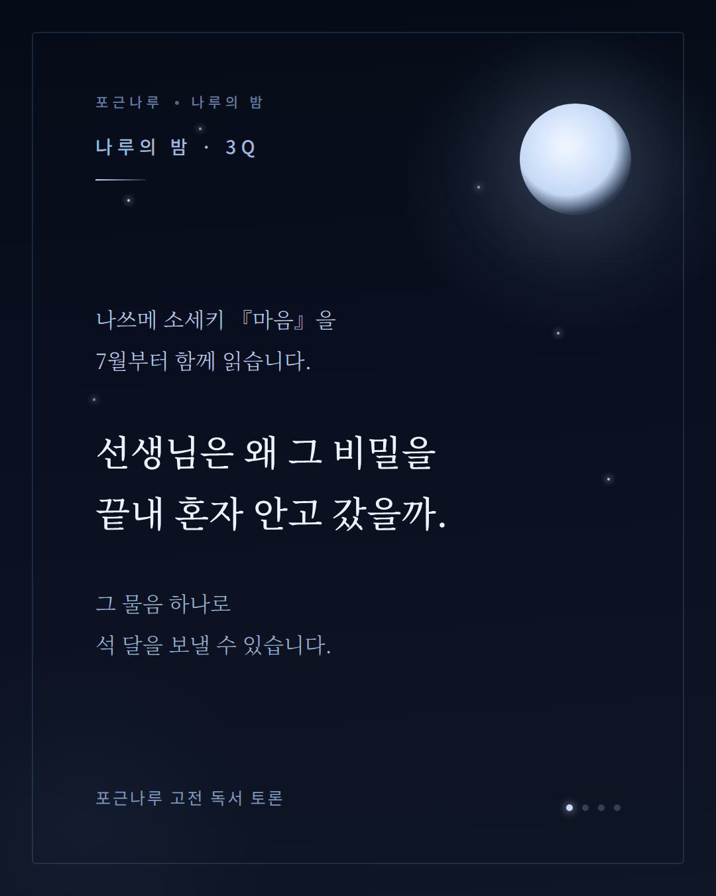
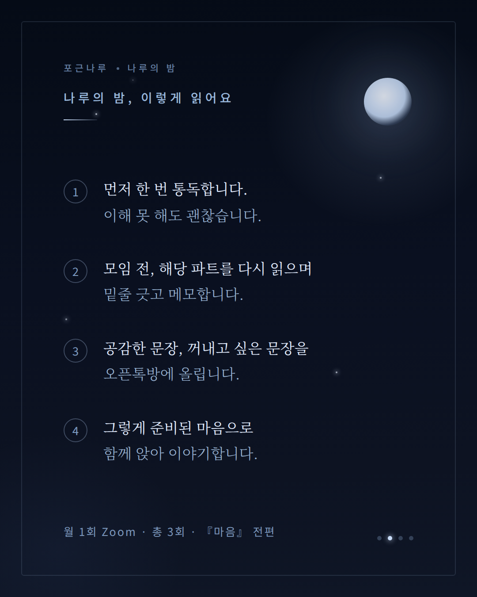
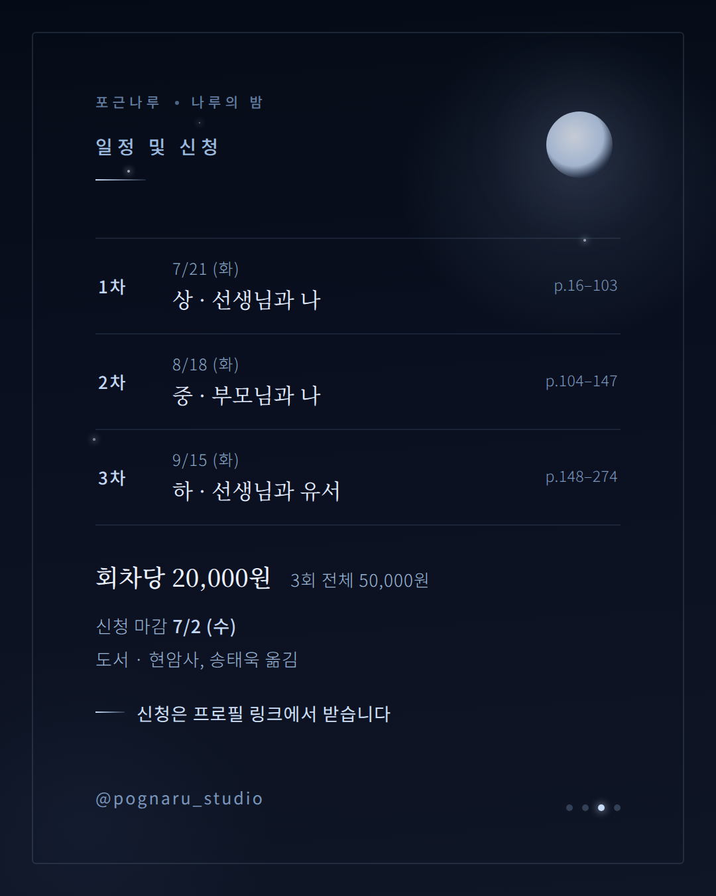
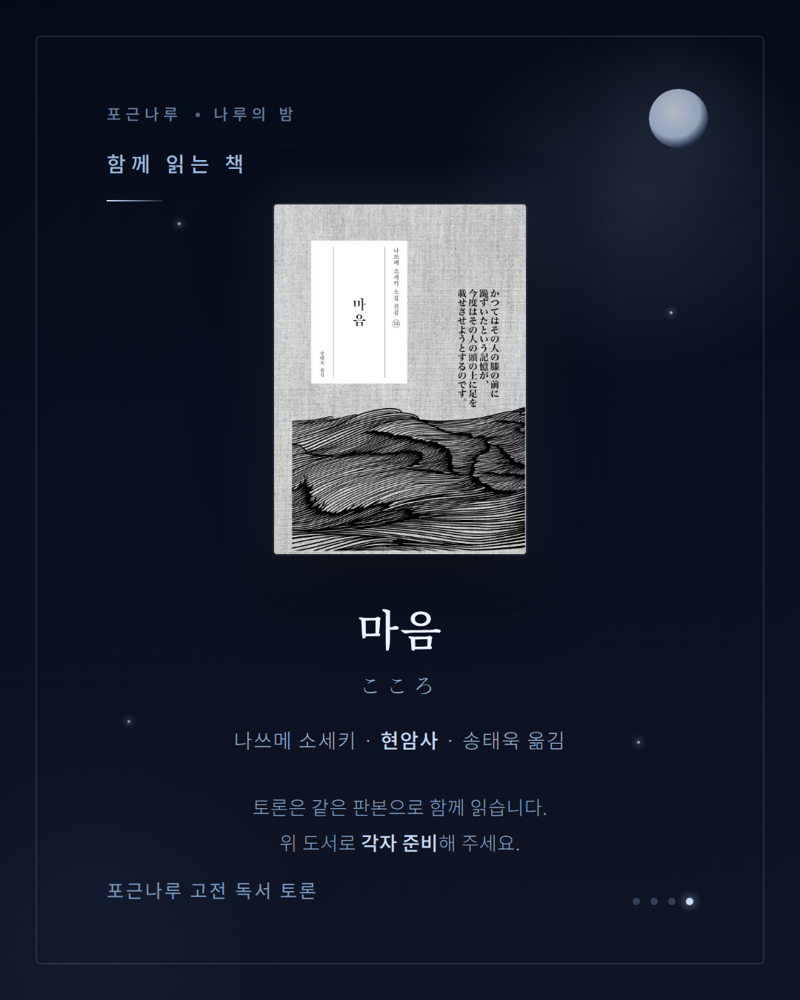

보이지 않는 문
이번 주는 무언가를 새로 만든 주이기도 했지만, 그보다 무엇을 열어두고 무엇을 닫아둘지를 배운 주였다. 권한의 문, 공개와 사적의 경계, 그리고 흩어진 것에 자리를 마련하는 일.
자동화와 권한
이번 주에는 아침 글감과 일지 자동화가 기대만큼 안정적으로 이어지지 않은 이유를 점검했다. 원인은 실행 의지의 문제가 아니라, 새벽 시간대마다 자동화가 권한 확인 단계에서 멈추는 구조에 있었다.
이를 통해 자동화는 단순히 기능을 연결하는 작업이 아니라, 시스템이 스스로 실행될 수 있도록 신뢰와 권한을 사전에 정리하는 일이라는 점을 분명히 확인했다. 이번 작업은 도구가 어디까지 자율적으로 움직일 수 있고, 어디에서 반드시 멈추고 확인해야 하는지 그 경계를 다시 인식하게 했다.
공개와 사적 기록의 경계
dh.archive를 정비하는 과정에서 어떤 기록을 공개하고 어떤 기록을 개인 영역에 남길지 기준을 구체화했다. 대화 페이지는 공개 영역에서 분리해 로컬 중심으로 관리하고, 모닝페이지 같은 사적인 글은 클라우드 밖에 보관하는 방식으로 정리했다.
이번 주 작업은 단순한 파일 이동이 아니라, 기록의 성격에 따라 공개 범위와 보관 위치를 다르게 설계한 과정이었다. 이를 통해 외부에 보여줄 작업과 개인의 내면 기록은 분리되어야 한다는 원칙을 더 분명히 세웠다.
흩어진 기록의 구조화
이번 주에는 그동안 만들어 온 자동화 루틴 전반을 정리했다.
- 아침 글감로컬 → 깃허브 공개
- 여우 일지로컬
- 저녁 마무리 체크클라우드 · 매일 발송
- 주간 콘텐츠 브리핑클라우드 · 매주
- 모닝페이지 회고로컬 · 주간/월간
그중 아침 글감과 아카이브 허브를 새로 구성하면서, 흩어져 있던 기록에 구조를 부여하는 작업을 진행했다. 매일 축적되던 글감은 dawn이라는 독립된 자리로 모였고, 이전에 써둔 글감과 페이지들도 허브 안에서 다시 연결되기 시작했다. 이 작업은 단순히 자료를 쌓는 데서 그치지 않고, 축적된 결과물이 이후에도 탐색되고 이어질 수 있도록 자리를 마련한 데 의미가 있다.
이번 주 손으로 지은 것들
공개된 결과물은 눌러서 직접 볼 수 있어요.
dawn — 아침 글감 아카이브, ‘여명’ 디자인 열기 ↗ 독서 DNA — 공개/사적 페이지를 갈라 정리하며 남긴 독서 리포트 열기 ↗ deeper-index — 디퍼 살롱 자료 별자리 목차 열기 ↗AI를 디자인에 쓴 사례
디퍼 본 과정과는 별개지만, AI를 실제 디자인 작업에 활용한 기록으로 함께 남겨 둡니다.
나루의밤 커리큘럼 디자인
3분기 『마음』(나쓰메 소세키) 모집 — 인스타 카드뉴스 4장




가비 주간 플래너
알림장 한 장을 모바일 주간 계획표 HTML로 만드는 작업
플래너 열기 ↗입력. 옵시디언 알림장 Markdown(자연어로 적힌 한 주 일정).
할 일.
1. 자연어를 파싱해 마감 · 루틴 · 독서 세 갈래로 분류한다.
2. 요일별(월~일)로 배치하되, 체력 흐름을 해치지 않게 무리한 날 없이 고르게 편다.
3. 모바일 세로 화면 기준 한 장 HTML로 만든다. 파일명은 YYYY-Www.html.
디자인 톤.
· 포근나루 컬러 — 크림 #FDF4EE 바탕, 살구 #F8E4D4 카드, 테라코타 #C8845A 강조, 다크브라운 #3C2415 텍스트.
· 글꼴 — 제목 Gowun Batang, 본문 Nanum Myeongjo, 보조 Gowun Dodum.
· 둥근 모서리·넉넉한 여백, 장식 최소. ‘고요히 머무는’ 결.
· 마감은 테라코타 점, 루틴은 살구 박스, 독서는 분량까지 표기.
PC 바탕화면 아이콘 제작
매일 쓰는 도구들을 한눈에 — 브랜드 결을 입힌 아이콘